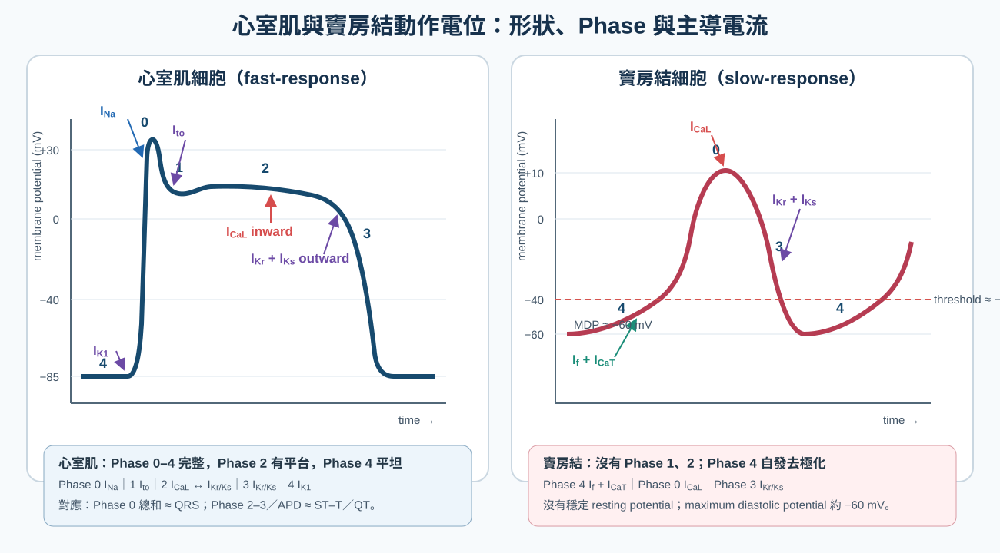

藥物
Antiarrhythmics ｜ 抗心律不整藥 · Vaughan Williams 分類
筆記更新 2026-07-28·整理狀態：可用
其他名稱 17
Antiarrhythmics · 抗心律不整藥 · Vaughan Williams · Amiodarone · Lidocaine · Mexiletine · Flecainide · Propafenone · Procainamide · Quinidine · Disopyramide · Sotalol · Dofetilide · Ibutilide · Dronedarone · Adenosine · Digoxin
心臟動作電位與離子電流
整篇藥理都掛在這張圖上。要先分清楚兩件事：誰在載流（構成動作電位本身的通道電流），誰只是在旁邊維持條件（幫浦與交換器撐住梯度、電解質調節通道行為）。這一層分不開，後面的藥理就全歪。
快反應細胞（心房肌、心室肌、Purkinje 纖維）
| 相 |
發生什麼 |
主導電流 |
| Phase 0 |
快速去極化（上升支陡） |
I_Na（快速鈉內流） |
| Phase 1 |
早期再極化的小凹 |
I_to（瞬時外向鉀流，另有 Cl⁻ 成分） |
| Phase 2 |
平台期 |
I_CaL 內流 ↔ 鉀外流互相抵銷 |
| Phase 3 |
再極化——決定 QT 長度 |
I_Kr（快速）、I_Ks（緩慢） |
| Phase 4 |
靜止膜電位約 −85 ～ −90 mV、穩定不漂移 |
I_K1（內向整流鉀流） |
慢反應細胞（竇房結 sinoatrial node、房室結 atrioventricular node, AV node）
| 差異 |
慢反應細胞 |
| Phase 0 由誰負責 |
I_CaL——不是 I_Na（此處快鈉通道多處於失活狀態）→ 上升支慢、傳導慢 |
| Phase 4 |
沒有穩定靜止電位：I_f（funny current，HCN 通道的 Na⁺ 內流） ＋ T-type Ca²⁺ 造成自動舒張期去極化 |
| Phase 1、2 |
沒有明顯的 Phase 1 與平台期 |
| 最大舒張電位 |
約 −60 mV（因為 I_K1 極少） |
| 藥理意義 |
Class II 與 Class IV 主要作用在這裡；Class I 幾乎不影響結節 |

心室肌與竇房結動作電位對照。心室肌 Phase 0 由 I_Na 主導、Phase 2 為 I_CaL 與 outward K⁺ currents 平衡、Phase 3 由 I_Kr／I_Ks 再極化、Phase 4 由 I_K1 維持約 −85 mV；竇房結沒有 Phase 1、2，Phase 4 以 I_f／I_CaT 自發去極化，Phase 0 改由 I_CaL 主導，最大舒張電位約 −60 mV。依 Cardiac action potential and antiarrhythmic drugs 與 The sinoatrial node current puzzle 重繪。
機轉 Mechanism｜Vaughan Williams 分類
flowchart TD
A["Phase 4 靜止或自動去極化<br/>I_K1；結節為 I_f"] --> B["Phase 0 去極化<br/>快反應 I_Na／慢反應 I_CaL"]
B --> C["Phase 1 早期再極化<br/>I_to"]
C --> D["Phase 2 平台期<br/>I_CaL 內流"]
D --> E["Phase 3 再極化<br/>I_Kr 與 I_Ks"]
E --> A
B -. 擋 Phase 0 .-> F["Class I 擋鈉<br/>QRS 變寬"]
D -. 擋 I_CaL .-> G["Class IV 擋鈣<br/>PR 變長"]
E -. 擋 I_Kr .-> H["Class III 擋鉀<br/>QT 變長"]
A -. 降交感與 I_f .-> I["Class II 交感阻斷<br/>心率與傳導下降"]
筆記中的流程與關係Class I：擋 Na⁺，靠「解離動力學」再分三支
三支的差別不在擋得多不多，而在藥物從鈉通道解離的速度。解離愈慢，下一次心跳來時卡著的藥愈多 → 傳導愈慢 → QRS 愈寬。
| 支 |
解離速度 |
對 APD／QT |
對 QRS |
代表藥 |
一句話 |
| Ia |
中等（1–10 秒） |
延長（兼擋 I_Kr） |
增寬 |
quinidine、procainamide、disopyramide |
一手擋鈉一手擋鉀 → QRS 與 QT 都長 |
| Ib |
快（＜1 秒） |
縮短（擋晚期／窗電流 Na⁺） |
幾乎不變 |
lidocaine、mexiletine |
全類唯一縮短 APD；只在心室有效 |
| Ic |
慢（＞10 秒） |
幾乎不變 |
增寬最多 |
flecainide、propafenone |
傳導慢得最兇 → 促心律不整最兇 |
Class II、III、IV 與分類外的四個主力
| 類 |
標的 |
心電圖方向 |
代表藥 |
重點 |
| II |
β 受體 → cAMP↓ → I_f 與 I_CaL 間接下降 |
PR ↑、心率 ↓；QRS 與 QT 不變 |
esmolol、metoprolol、bisoprolol、propranolol、carvedilol（見 Beta blocker↗） |
唯一被證實降低死亡率與猝死的一類；靜脈首選 esmolol 500 µg/kg 推注 1 分鐘 → 50–200 µg/kg/min，半衰期約 9 分鐘，最適合不確定耐受度時試打 |
| III |
I_Kr 為主（sotalol 兼 β 阻斷、amiodarone 跨四類） |
QT ↑↑ |
amiodarone、sotalol、dofetilide、ibutilide、dronedarone |
反向使用依賴性（見下）；torsades 高風險的是 sotalol、dofetilide、ibutilide；amiodarone 與 dronedarone 雖延長 QT，torsades 發生率都很低 |
| IV |
L-type Ca²⁺（結節為主） |
PR ↑、心率 ↓ |
verapamil、diltiazem（非二氫吡啶類） |
負性肌力 → HFrEF 禁用；verapamil 的負性肌力與便秘比 diltiazem 明顯 |
| 分類外 |
各自不同 |
依機轉 |
adenosine（A1 受體 → 開 I_KACh、抑制 cAMP）、digoxin（Na⁺/K⁺-ATPase ＋ 迷走張力）、Mg²⁺、ivabradine（純擋 I_f，新版分類列為 Class 0） |
房室結阻斷有四條路：adenosine、digoxin、Class II、Class IV |
Amiodarone
| 情境 |
劑量 |
| 口服負荷（心室性心律不整，美國仿單） |
800–1600 mg／日分次 × 1–3 週（累積約 10 g）→ 600–800 mg／日 × 約 1 個月 → 維持 400 mg/日 |
| 口服負荷（心房顫動） |
劑量低得多：600 mg／日 × 約 4 週 → 200 mg／日維持（台灣常見寫法：600 → 400 → 200 mg 各 1–2 週） |
| 口服維持 |
200–400 mg QD（心房顫動多用 200 mg、心室性心律不整常用 400 mg）——用能控制住的最低劑量 |
| 靜脈（穩定 VT／急性） |
150 mg／10 分鐘 → 1 mg/min × 6 小時 → 0.5 mg/min × 18 小時（24 小時上限約 2.2 g） |
| 靜脈（無脈搏 VT／VF） |
300 mg 靜脈推注，必要時再 150 mg |
| 腎功能不良 |
不需依腎調整（肝膽排除）——這是它在透析病人的優勢，見 Dialysis |
器官毒性與追蹤時程
| 系統 |
表現 |
追蹤 |
| 肺（最可怕） |
間質性肺炎、肺纖維化、急性呼吸窘迫；乾咳 ＋ 漸進性喘 ＋ DLCO 下降 |
基線胸部 X 光 ＋ 肺功能含 DLCO；之後胸部 X 光每年一次；一有呼吸道症狀立刻重做影像與 PFT |
| 甲狀腺 |
低下較常見；亢進分兩型——Type 1（碘誘發合成過量，本有甲狀腺病）用抗甲狀腺藥、Type 2（破壞性甲狀腺炎）用類固醇 |
基線 TSH ＋ free T4，之後每 6 個月 |
| 肝 |
轉胺酶上升常見；肝炎與肝硬化罕見 |
基線 AST／ALT，之後每 6 個月；＞3 倍正常上限要停藥 |
| 眼 |
角膜微沉積（corneal verticillata）幾乎人人都有，多半無症狀或只有光暈——不是停藥理由；視神經病變罕見但可致盲——要停藥 |
只有本來就有視力異常者才做基線眼科評估；之後不需常規定期檢查，出現視力症狀才轉眼科（含 slit lamp） |
| 皮膚／神經 |
光敏感、日曬部位藍灰色沉著（與累積劑量相關）；周邊神經病變、失調、震顫 |
防曬衛教 ＋ 病史詢問，無需常規檢驗 |
| 交互作用 |
機轉 |
處理 |
| Warfarin |
抑制 CYP2C9 → INR 上升（起效延遲數天至數週、停藥後仍持續） |
warfarin 減量約 30–50%，起始後密集追 INR（見 Warfarin↗） |
| Digoxin、DOAC |
抑制 P-glycoprotein → digoxin 濃度約加倍、DOAC 濃度上升 |
digoxin 減半並追濃度；DOAC 依仿單減量或換藥 |
| Statin |
抑制 CYP3A4 → 肌病變／橫紋肌溶解 |
simvastatin 上限 20 mg／日、lovastatin 上限 40 mg／日；改用不走 CYP3A4 的 pravastatin／rosuvastatin（見 Statin） |
| beta-blocker、非二氫吡啶類 CCB |
加成的心搏過緩與房室阻斷 |
減量、監測心率 |
QT 延長：一群同向、一個反向
| 方向 |
誰 |
| 延長 QT |
Class Ia（quinidine、procainamide、disopyramide）、Class III（amiodarone、sotalol、ibutilide、dofetilide、dronedarone）；非心臟藥：巨環類與氟喹諾酮類抗生素、azole 抗黴菌藥、haloperidol／ziprasidone／三環抗憂鬱劑／citalopram、ondansetron、methadone、hydroxychloroquine、arsenic trioxide；低血鉀（見 Hypokalemia）、低血鎂、低血鈣 |
| 縮短 QT |
Class Ib（lidocaine、mexiletine）、digoxin、高血鈣 |
適應症與選藥邏輯
| 情境 |
用藥角色 |
| 心率控制（細節見 Atrial fibrillation） |
beta-blocker 或非二氫吡啶類 CCB 為主力；HFrEF 或低血壓改 digoxin／amiodarone；digoxin 只壓休息心率、對運動時心率效果差 |
| 節律控制（心房） |
無結構性心臟病：flecainide、propafenone、dronedarone、sotalol｜結構性心臟病或 Heart failure：amiodarone、dofetilide｜急性藥物轉律：ibutilide（靜脈）、口袋藥 flecainide／propafenone |
| Ventricular tachycardia |
急性穩定：procainamide 或 amiodarone｜長期：Beta blocker↗ ＋ ICD；amiodarone／sotalol 減少發作與放電、不改善存活；mexiletine 常作為加成用藥 |
| HCM |
disopyramide 靠最強的負性肌力降低左心室流出道壓力差——Class Ia 罕見的「拿副作用當療效」 |
| Inherited arrhythmia syndromes |
quinidine（擋 I_to）用於 Brugada 與短 QT；mexiletine（擋晚期鈉電流）用於 LQT3；beta-blocker 是 LQT1／LQT2 與 CPVT 的骨幹 |
劑量與用法
靜脈（急性）
| 藥 |
劑量 |
關鍵陷阱 |
| Adenosine |
6 mg 快速推注 ＋ 立刻沖 20 mL 生理食鹽水；無效可 12 mg（仿單允許再一次 12 mg；2020 AHA ACLS 只列兩劑） |
仿單禁忌：第二度／第三度房室阻斷、病竇症候群或症狀性心搏過緩（無節律器者）；支氣管痙攣性肺病（氣喘）應避免；半衰期 ＜10 秒，必須大孔徑近心端靜脈快推；心臟移植者或經中心靜脈給藥先減到 3 mg；dipyridamole／carbamazepine 增效需減量、theophylline／咖啡因拮抗需加量 |
| Lidocaine |
1–1.5 mg/kg 推注，可每 5–10 分鐘追加 0.5–0.75 mg/kg（總量 ≤3 mg/kg）→ 1–4 mg/min 維持 |
肝血流依賴：心衰竭、肝病、老年、併用 cimetidine 都要減量；毒性是中樞性——口周麻、耳鳴、視覺模糊、抽搐 |
| Procainamide |
20–50 mg/min，直到終止／低血壓／QRS 增寬 ＞50%／總量 17 mg/kg → 1–4 mg/min 維持 |
低血壓、延長 QT；腎功能不良時活性代謝物 NAPA（本身具 Class III 作用）累積 |
| Ibutilide |
≥60 kg：1 mg 輸注 10 分鐘，必要時 10 分鐘後再 1 mg；＜60 kg：0.01 mg/kg |
給藥後持續心電圖監測 ≥4 小時；先把鉀鎂補足 |
| Diltiazem／verapamil |
diltiazem 0.25 mg/kg（常用 20 mg）／2 分鐘，15 分鐘後可 0.35 mg/kg → 5–15 mg/hr｜verapamil 2.5–5 mg／2 分鐘可重複 |
HFrEF 禁用；未定性的寬 QRS 心搏過速絕對不給 |
| Magnesium sulfate |
1–2 g／15 分鐘，必要時重複 |
torsades 不看血鎂濃度就給 |
口服（長期）
| 藥 |
劑量 |
關鍵限制 |
| Sotalol |
80 mg BID 起始，可加至 120–160 mg BID |
依 CrCl 調「間隔」不是調劑量：＞60 → q12h；30–59 → q24h；10–29 → q36–48h；＜10 → 個別化（幾乎不用）。最大總日劑量 320 mg。心房顫動適應症另加：基線 QT ＞450 ms、血鉀 ＜4 mEq/L、氣喘禁用；舊版仿單並禁用於 CrCl ＜40。住院起始 ≥3 天 |
| Dofetilide |
125–500 µg BID，依 CrCl 與 QTc 查表定劑量 |
CrCl ＜20 禁用；住院起始 3 天；與 verapamil、cimetidine、trimethoprim、ketoconazole、hydrochlorothiazide 禁止併用（濃度飆升） |
| Flecainide |
50–150 mg BID；口袋藥單次 200–300 mg |
結構性心臟病禁用；必須併用房室結阻斷劑 |
| Propafenone |
150–300 mg TID；口袋藥單次 450–600 mg |
同上；本身有弱 β 阻斷作用 → 氣喘慎用；金屬味 |
| Mexiletine |
200 mg q8h 起始，常用 200–300 mg q8h |
口服版的 lidocaine；噁心、震顫 |
| Dronedarone |
400 mg BID 隨餐 |
禁用：NYHA Class IV，或有症狀心衰竭且近期失代償需住院（FDA 仿單，ANDROMEDA）；AHA/ACC 心房顫動指引寫作 NYHA III–IV 或近 4 週內失代償。另禁用於永久型心房顫動（PALLAS）；肝毒性 |
| Digoxin |
0.125–0.25 mg QD（靜脈負荷 0.25 mg q6h 至總量 0.75–1.5 mg） |
心衰竭目標濃度 0.5–0.9 ng/mL；老年與腎功能不良要下修 |
副作用 Adverse Effects
| 藥／類 |
招牌副作用 |
能從機轉推嗎 |
| Class Ia |
quinidine：cinchonism（耳鳴、頭痛、視覺模糊）、腹瀉（最常見）、免疫性血小板低下、抗膽鹼作用反而加快房室傳導｜procainamide：藥物誘發性紅斑性狼瘡（慢乙醯化者風險高）、顆粒球缺乏症｜disopyramide：最強負性肌力 ＋ 最強抗膽鹼（口乾、尿滯留、青光眼惡化） |
部分（狼瘡只能背） |
| Class Ib |
中樞神經毒性：口周麻、耳鳴、意識改變、抽搐；mexiletine 另有腸胃不適與震顫 |
可以 |
| Class Ic |
促心律不整（proarrhythmia）——全類共通，Ic 最兇；另有視覺障礙、負性肌力；propafenone 有金屬味與支氣管痙攣 |
可以 |
| Class III（除 amiodarone） |
torsades de pointes；sotalol 另有 beta-blocker 全套副作用；dronedarone 有肝毒性 |
可以 |
| Amiodarone |
見專節（肺／甲狀腺／肝／眼／皮膚／神經） |
部分 |
| 非二氫吡啶類 CCB |
低血壓、心搏過緩、便秘（verapamil）、下肢水腫、負性肌力 |
可以 |
| Adenosine |
顏面潮紅、胸悶、瀕死感、數秒的短暫心搏停止（會自行恢復）、支氣管痙攣 |
可以 |
交互作用與監測
| 併用什麼 |
會發生什麼 |
怎麼處理 |
| Amiodarone ＋ warfarin／digoxin／statin／DOAC |
CYP2C9、CYP3A4、P-gp 全被抑制 → 各自濃度上升 |
見 Amiodarone 專節的減量規則 |
| 兩種以上延長 QT 的藥 |
QT 效應相加 → torsades |
併用前查 QTc、補鉀補鎂；能換就換 |
| Verapamil／diltiazem ＋ beta-blocker |
房室結雙重阻斷 → 高度房室阻斷、心搏停止 |
靜脈併用尤其危險，避免 |
| 利尿劑造成低血鉀／低血鎂 |
同時放大 digoxin 毒性與 QT 延長 |
最常見的可矯正誘因，見 Hypokalemia |
| Adenosine ＋ dipyridamole／carbamazepine；＋ theophylline／咖啡因 |
前者增效 → 長時間心搏停止；後者競爭性拮抗 A1 受體 → 失效 |
前者減到 3 mg 起；後者需較高劑量或改用其他方式 |
要追蹤的指標：心電圖的 QRS 與 QTc（Class I 看 QRS、Class Ia／III 看 QTc）、血鉀與血鎂、腎功能（sotalol、dofetilide、procainamide、digoxin、flecainide）、肝功能與甲狀腺功能（amiodarone）、digoxin 血中濃度（給藥後 ≥6–8 小時採檢）
特殊族群
| 族群 |
注意事項 |
| 孕婦／哺乳 |
adenosine 是孕期室上頻脈的首選；digoxin、metoprolol、propranolol、flecainide、sotalol 使用經驗較多；amiodarone 應避免（胎兒甲狀腺功能低下、生長遲滯、神經毒性） |
| 老年 |
digoxin 依肌肉量與腎功能下修；lidocaine 因肝血流下降要減量；sotalol／dofetilide 的風險隨腎功能下降陡升 |
| 腎衰竭／Dialysis |
依 CrCl 調量或禁用：sotalol、dofetilide、digoxin、procainamide（NAPA）、flecainide；amiodarone 不需依腎調整 |
| 肝功能不良 |
lidocaine、propafenone、amiodarone 減量（lidocaine 最敏感，心衰竭造成肝血流下降時同樣要減） |
| 兒童 |
adenosine 0.1 mg/kg（上限 6 mg） → 無效改 0.2 mg/kg（上限 12 mg） |
| 氣喘／慢性阻塞性肺病 |
避開 adenosine 與非選擇性 beta-blocker（propranolol、sotalol、carvedilol）；propafenone 也有弱 β 阻斷作用 |
禁忌與陷阱
相關連結